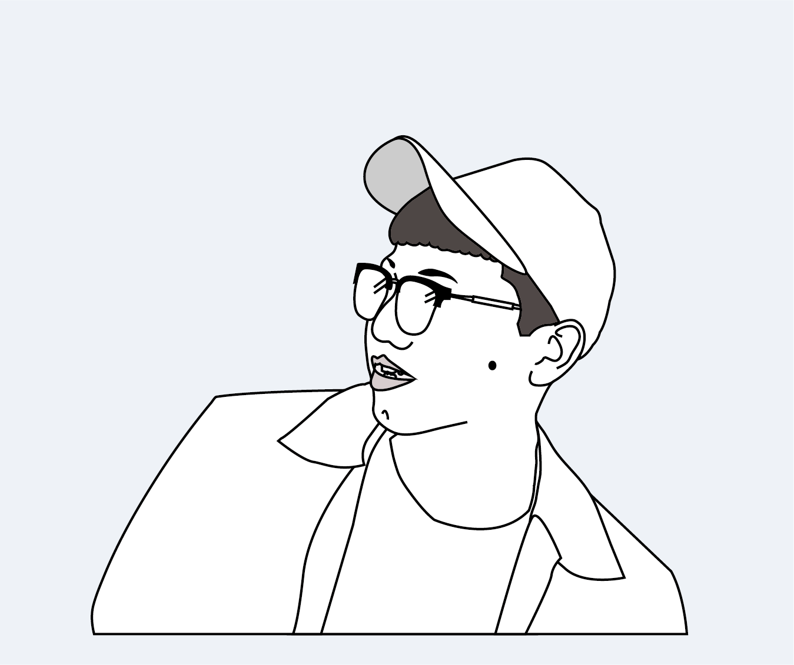
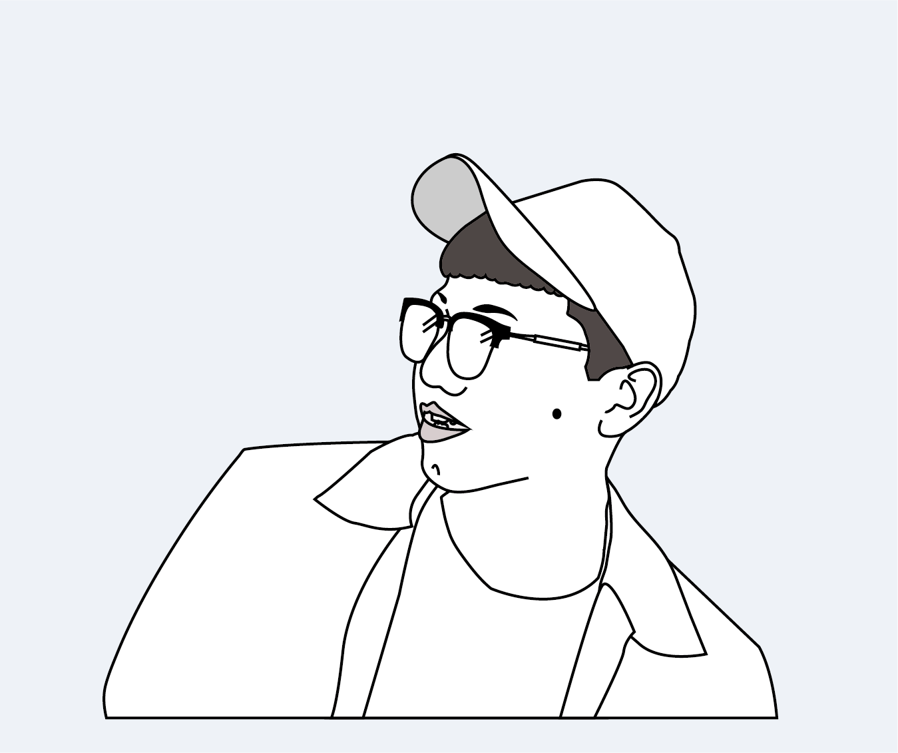

何庭賢
2018/12/21
【【記者何庭賢屏東報導】「預備，開始！」舉起各自的釣蝦桿，在負責人發號施令後，向前一揮，等待蝦子上鉤。「瘋蝦客釣蝦技研社第十九屆釣蝦交流賽（學生盃）」於16日在屏東縣潮州鎮金多寶釣蝦場舉辦，吸引了36名瘋蝦客釣蝦技研社社團成員及業界好手來切磋。
這是我首次觀摩到釣蝦比賽，畢竟在馬來西亞不怎麼盛行釣蝦，甚至不會像台灣這樣，處處都易見。比賽為了公平，選手皆使用統一的豬肉餌料。選手需在時限50分鐘內與其他選手搶奪池中十斤量的蝦子，再依最終成功釣蝦的數量決勝負，若數量相同則以重量取勝。擁有約六年釣蝦經驗、台南應用科技大學餐飲系學生陳尚宥表示，比賽使用的蝦子品種為泰國蝦，須依據其特性隨機應變，「釣公蝦比釣母蝦更具挑戰性，因為公蝦有鉗子會戲弄餌料。」他也強調，釣蝦時要試探性地反覆確認蝦子是否真的上鉤，「只要抓對時機就可以直接開槍（釣蝦）」。
賽場上，選手攜帶客製化釣箱，設計從可愛的卡通人物到唯美的風景畫都有，凸顯出各選手的興趣及喜好。時間壓力下，從釣桿的組裝、線的長短、到餌料的準備都非常緊迫。過程中，有些選手全神貫注地注視著浮標，深怕錯過一秒就失去釣起蝦子的時機。「咻—」地一聲，選手迅速將釣桿提起。在收線的同時，另一手則熟練地解下鉤子上的蝦子，順手放進蝦籠，待賽後計分。在決賽中獲得第五名、來自美和科技大學餐旅管理系的學生陳柏諭表示，釣蝦的訣竅在於觀察水池中浮標的移動，「若時機不成熟，將無法正確判定，就會很容易放槍（釣不到）。」
在比賽期間，除了要一一與選手進行採訪，也需要抓拍一些釣蝦前、中、後的關鍵照，這對於一個外行人的我來說，簡直要了命。除了要待在滿是煙味的密閉空間外，還需一隻緊盯著水面上浮標的移動，深怕不留意就錯過拍照的時機！ 選手所攜帶的客製化釣箱，裡面放滿了基本的器材，從剪刀、夾子、線組、鉤子、水深棒（浮標）到釣竿，樣樣俱全。 圖／何庭賢攝
選手所攜帶的客製化釣箱，裡面放滿了基本的器材，從剪刀、夾子、線組、鉤子、水深棒（浮標）到釣竿，樣樣俱全。 圖／何庭賢攝參賽選手認為要取得好成績，取決於釣蝦的經驗。榮獲冠軍、來自「老爹天平俱樂部」的「Zhu Li（化名）」深感認同，他表示比賽過程曾一度感到壓力，「因為對面的選手都在起蝦（釣到蝦），還好今天運氣好，都能準確抓到浮標的訊號。」他也強調選手須具備耐性，專注於浮標所給的信號來判斷，方能成功釣起蝦子。
我認真覺得釣蝦選手的耐性非常好，與其他比賽不同的是，他們需要從釣竿接收浮標所給的信號，自己也需用眼睛來判斷，什麼時機下才最適合【開槍】，都是考驗選手的耐性！瘋蝦客釣蝦技研社管理員陳相如表示，近幾年本是休閒活動的釣蝦，逐漸轉型成競賽活動。並在許多社團的號召下，陸續有釣蝦愛好者在社團裡積極分享關於釣蝦的技巧。談及參賽選手的實力，陳相如也強調，「無論是在技術層面還是器材的準備上，選手的釣蝦水平已十分成熟和穩重。」
採訪後記
倒數最後幾次出外地採訪，起初這場比賽真的很不想接手。其一，因為在屏東（超爆遠欸）；其二，那個星期剛好吃土了，在花那麼多錢下到去採訪真的會升天！；其三，想把機會讓給別人。但最終因為害怕線稿量不夠，只好委曲求全接手了，馬上上網查詢交通、住宿等，還好這次也有朋友搭救，可以在台南待一晚，隔天凌晨再一早下屏東採訪。
主辦單位人很好，在說明來意後，也很主動詢問要不要提供交通來接我，對於一個外地人當然求之不得啊！來到比賽現場的時候，說實在我真的一步都不想進去！我個人是非常厭惡煙味，再加上比賽場地超級小，所以滿滿的選手都人手一支煙、另一手一顆檳榔，老實說有點反胃。但既然身為記者就要勇敢點，挑戰極限，所以就進到會場二話不說就拿出相機，開始尋找定點準備工作。畢竟是小地方，所以大家都是說台語，然後主辦單位還熱心在比賽前公告說：「有台北來的大學生要來採訪我們，如果他主動詢問就不要拒絕人家喔！」我當下真的超感動，沒想法喔「台灣最美的是人情味」這點，真的能在小地方感受到滿滿的愛！
採訪期間都很順利，大家也很樂意配合，但因為我不熟悉釣蝦，所以站在角落的時候有點無助，不知道釣蝦的時間點或者技巧，只能默默在旁邊做紀錄，還好有一名大學生主動靠過來，有點像體育比賽的現場轉播那樣，跟我一一說明了釣蝦的訣竅和術語，對於這樣的舉動真的會覺得自己很慶幸能接下這條線，想必在這趟比賽中能獲益滿滿。
比賽期間，主辦單位又是外帶午餐和飲料給我，說這是應該的，因為我大老遠來到這裡只為了做簡單的比賽報導，雖然當下心裡也是這麼想，但其實就算比賽再小，對於一名記者來說，也是很重要的線索，也要盡全力把報導寫好，才稱得起是一名記者！ 這次的採訪雖然有點遠，但其實能在跑報期間，把美麗的台灣走一遍也在所不惜呢。
 
